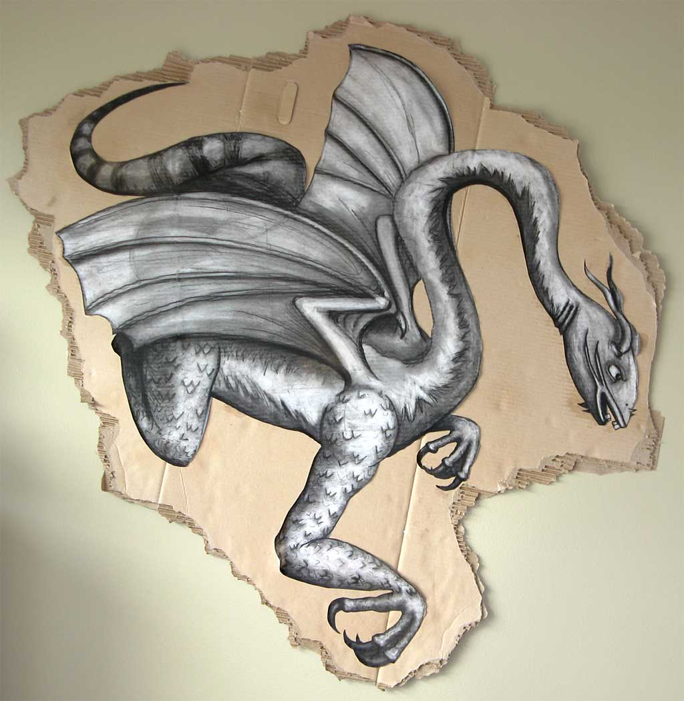

{Drawing: Charcoal preferred;}
I used to adore drawing in graphite and then I was forced to use charcoal. Now I'll never look back, the expression, texture and range charcoal holds is amazing. And the mess is just an added bonus.
The dragon-creature is a reimagination of the Jabberwock from Lewis Carroll's Alice in Wonderland books and the original illustrations. A combination of fish, bat, snake, hawk and imagination.
The reclined woman was drawn from a live model.